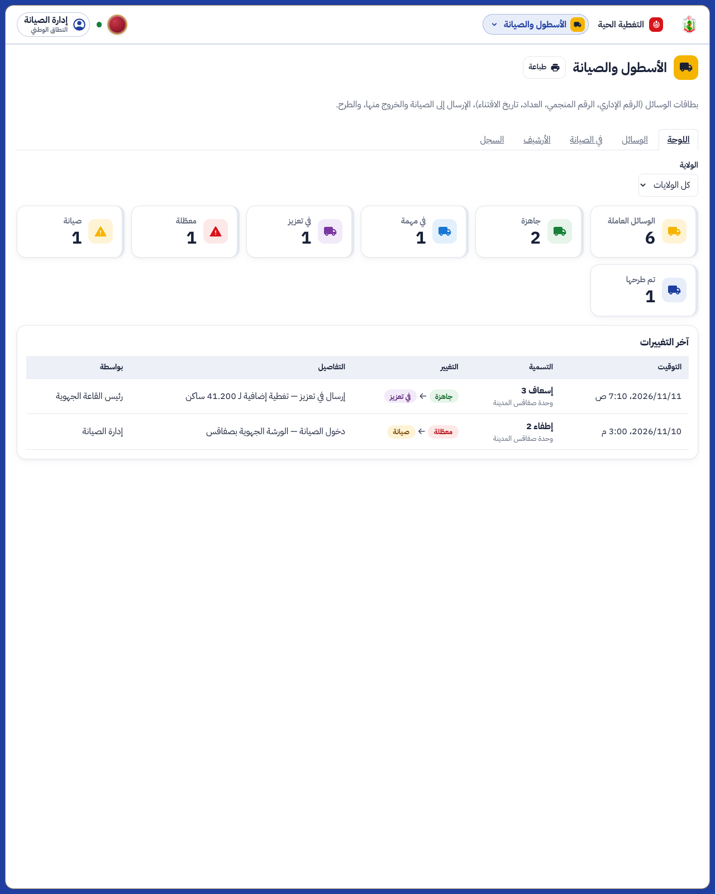
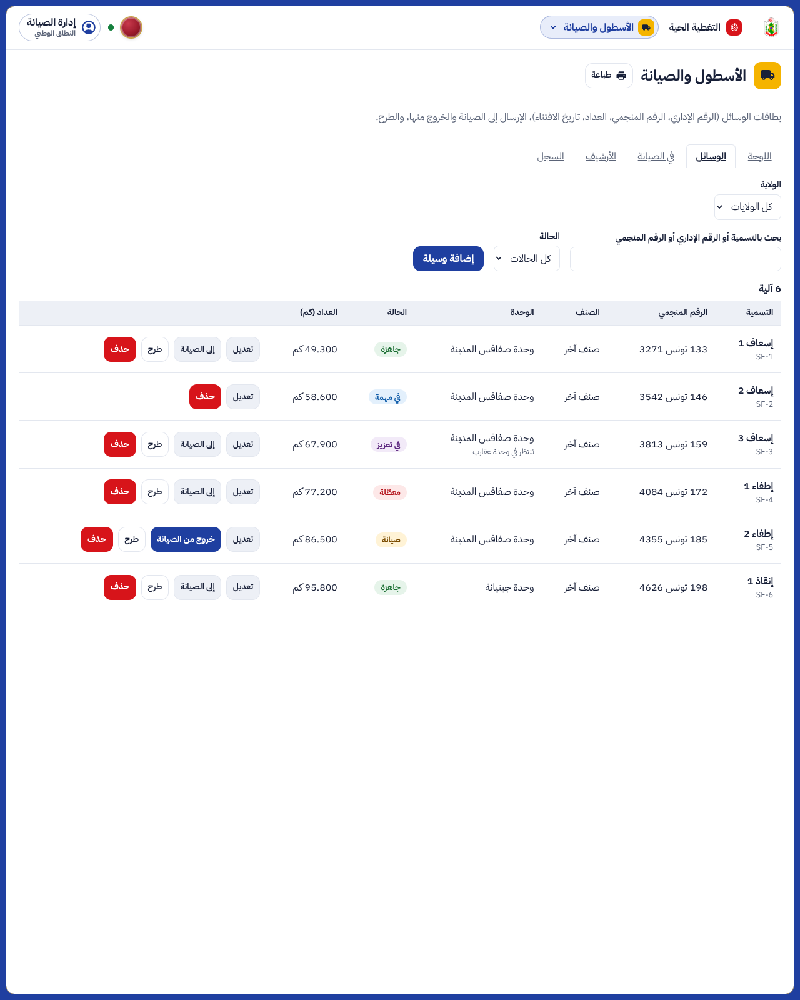
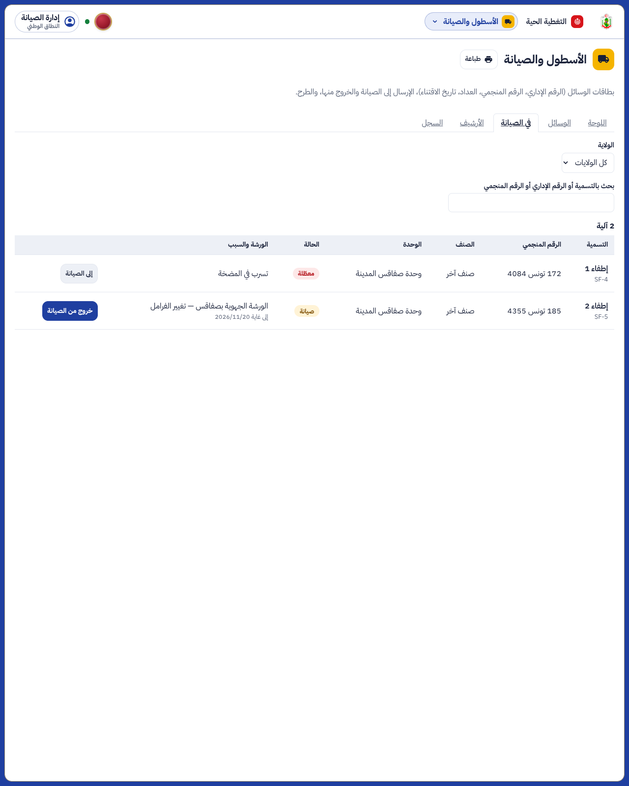
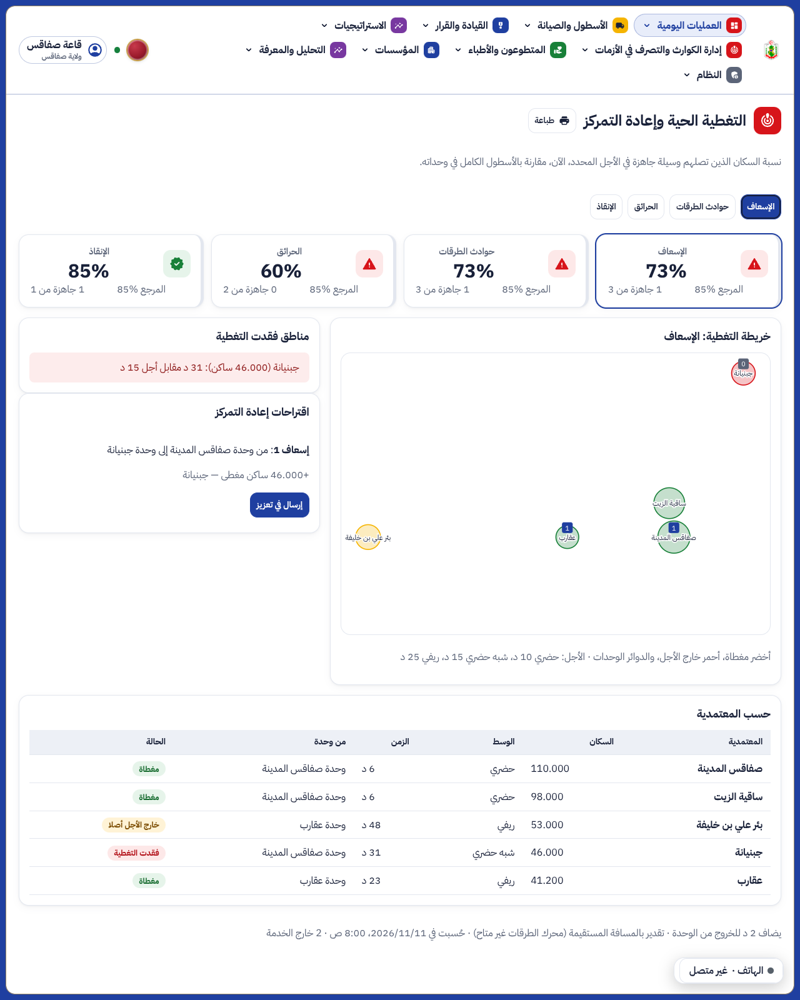
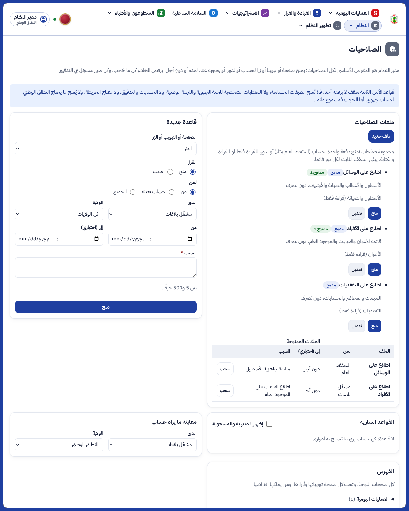

ء-حماية e-Himaya
تقرير المرحلة OS3: الأسطول والصيانة، التغطية الحية وإعادة التمركز، وملفات الصلاحيات
1. ما أُنجز
- منظومة الأسطول في عرض مستقل: قائمة «الأسطول والصيانة» بخمس صفحات (اللوحة، الوسائل، في الصيانة، أرشيف المطروحة، سجل الحالات)، تتقاسم سجل الوسائل مع العمليات كما تتقاسمه التفقدية. تظهر الوسائل حسب مرجع النظر، والقاعة المركزية ترى الكل.
- توحيد الصلاحيات: دور جديد «إدارة الصيانة والتصرف في الوسائل» يضيف الوسائل ويعدّل بطاقتها (الرقم الإداري، الرقم المنجمي، العداد، تاريخ الاقتناء) ويرسلها إلى الصيانة ويخرجها ويطرحها. قسم التصرف في الأفراد يبقى للأعوان والنقل، ورئيس العمليات للوحدات.
- القاعات تضبط الحالة العملياتية فقط: بالوحدة، في تعزيز (مع الوحدة المستقبلة)، معطبة (مع وصف العطب). «في مهمة» آلية من التدخلات، و«في طور الصيانة» و«تم طرحها» من إدارة الصيانة. الوسيلة في الصيانة أو المطروحة لا تحركها القاعة.
- التعزيز من القاعات: الوسيلة المرسلة في تعزيز تُقترح في الإرسال من الوحدة التي تنتظر فيها، وتراها قاعة تلك الولاية ما دامت هناك، ثم تعود بقرار القاعة.
- التغطية الحية: لكل معتمدية ولكل عائلة (الإسعاف، الطرقات، الحرائق، الإنقاذ) زمن أقرب وسيلة جاهزة مقابل أجل SNACR لوسطها، مقارنة بالأسطول الكامل في وحداته. تظهر المناطق التي فقدت التغطية وعدد سكانها، واقتراحات إعادة التمركز مع السكان الذين تعيدهم، ويقبلها رئيس القاعة بزر فتُرسل الوسيلة في تعزيز.
- ملفات الصلاحيات: يصنع مدير النظام ملفا من صفحات، كل صفحة للقراءة فقط أو للقراءة والكتابة، ويمنحه دفعة واحدة لحساب (المتفقد العام مثلا) أو لدور، بسبب وأجل اختياري، ويسحبه دفعة واحدة. يبقى السقف الثابت قائما. ثلاثة ملفات مدمجة للقراءة فقط: الوسائل، الأفراد، التفقديات.
- سجل كامل: كل تغيير حالة أو صيانة أو طرح أو تعزيز يُدوَّن مع صاحبه والسبب والربح في التغطية.
[SIM]اللقطات من بيانات تجريبية لولاية صفاقس. الأزمنة في المحيط التجريبي تقدير بالمسافة المستقيمة إلى أن يُشغَّل محرك الطرقات (البند OS3-2).
2. لقطات من المنظومة
لوحة الأسطول لإدارة الصيانة

الوسائل وأزرار إدارة الصيانة

الوسائل في الصيانة والمعطبة

التغطية الحية لقاعة صفاقس

ملفات الصلاحيات في صفحة الصلاحيات

3. الصلاحيات
| العمل | من |
|---|
| بطاقة الوسيلة (إضافة، تعديل، حذف خاطئ) والتجهيزات بالكمية والتوريد | إدارة الصيانة (جهوية لولايتها، مركزية للكل) |
| الإرسال إلى الصيانة والخروج منها، والطرح | إدارة الصيانة |
| بالوحدة، في تعزيز، معطبة | القاعات: عون القاعة، رئيس العمليات، المدير الجهوي، لولاية الوسيلة أو الولاية المستقبلة؛ القاعة المركزية للكل |
| في مهمة | آلية من الإرسال |
| الأعوان والنقل | قسم التصرف في الأفراد |
| الوحدات | رئيس العمليات |
| قبول اقتراح إعادة التمركز | القاعات |
| ملفات الصلاحيات ومنحها وسحبها | مدير النظام |
4. الاختبارات
- الخادم: 1271 اختبارا ناجحا على قاعدة جديدة، منها 6 جديدة في
tests/test_fleet.py (الرقم المنجمي، ملكية البطاقة، الحالات والصيانة، التعزيز في الاقتراحات، التغطية في باجة، الملفات)، وتحديث اختبارات الصلاحيات والسجل. الترحيل 0102 ذهابا وإيابا نظيف، و ruff و mypy نظيفان.
- اللوحة: 705 اختبارات ناجحة (3 جديدة)، وفحص الأنواع والتدقيق نظيفان، والترجمة كاملة بالعربية والفرنسية والإنجليزية.
- المتصفح:
e2e/phase-os3.spec.ts (3 اختبارات) ناجحة، ومنها اللقطات.
5. ما بقي (قائمة الانتظار)
- OS3-1: إشعار طاقم الوسيلة في تطبيق الأعوان عند إعادة تمركزها.
- OS3-2: أزمنة الطريق الفعلية وزمن الخروج المقاس لكل وحدة.
- OS3-3: كلفة الصيانة ونسبة الجاهزية الشهرية.
- OS3-4: التغطية عبر حدود الولايات للقاعة المركزية.
الوثائق الخمس الكبرى (المرجع البصري، مخططات UML، الوصف، كراس الشروط، العرض) تُحدَّث معا في نهاية المرحلة كما في docs/phase-end.md، بعد اكتمال أفكار المشاريع المفتوحة الجارية.